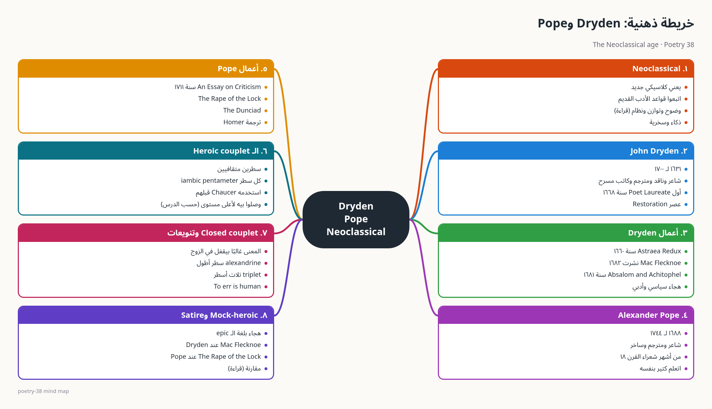

🏛️
الدرس 38: The Neoclassical age: Dryden and Pope، يعني العصر الكلاسيكي الجديد
📄 حمّل PDF الدرس 🎧 حمّل تسجيل الدرس كامل (MP3 · 2 MB) 📝 ملخص الدرس (عربي) PDF 📝 Lesson Summary (English) PDF 🧠 الخريطة الذهنية PDF🧠 شوف الخريطة الذهنية للدرس
